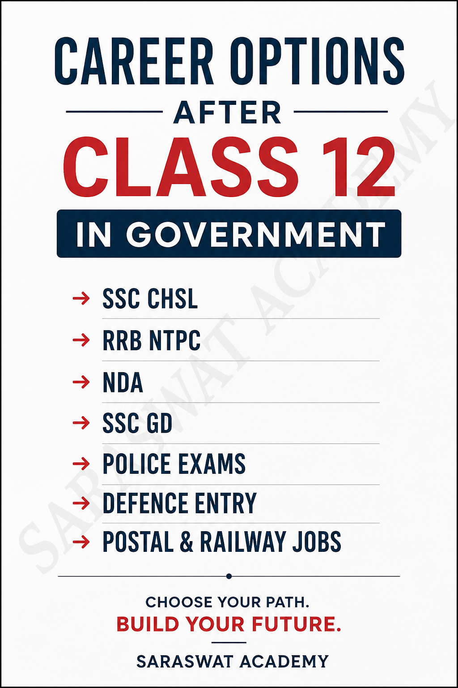

Government Exams After 12th — Know Your Options!
📚 Published by: Saraswat Academy

Government Exams and Career Options After Class 12 in India
Completed Class 12 and thinking about a government career? You have more options than you may realize. From central government jobs and railway recruitment to defence, police, postal services and state government jobs, there are several career paths available to eligible 12th-pass students.
The right choice depends on your stream, age, interests, skills, physical fitness and career goals. Some recruitments require Class 12 specifically, while others accept candidates who have passed Class 10 as well.
Top Government Exams After Class 12
| Exam / Recruitment | Career Area | Typical Eligibility | Best For |
|---|---|---|---|
| SSC CHSL | Central Government | 12th Pass | Clerical, data-entry and office jobs |
| RRB NTPC – Undergraduate | Indian Railways | 12th Pass | Railway clerical and commercial posts |
| SSC Stenographer Grade C & D | Central Government | 12th Pass + Stenography Skill | Students interested in stenography and office work |
| SSC Selection Post | Central Government | Depends on the advertised post; includes 10+2-level posts | Students looking for specialized government vacancies |
| UPSC NDA & NA | Defence | 12th / subject-specific requirements | Students aiming for officer careers in the Armed Forces |
| SSC GD Constable | CAPFs / Uniformed Services | 10th Pass | Students interested in uniformed government services |
| Police Recruitment Exams | State Police | Varies by state and post | Students interested in police careers |
| Defence Recruitment | Army, Navy, Air Force | Varies by entry and stream | Students interested in defence careers |
| State Government Recruitment | State Government | Varies by recruitment | Students targeting jobs within their state |
1. SSC CHSL – One of the Most Popular Options After 12th
The Staff Selection Commission Combined Higher Secondary Level (SSC CHSL) examination is one of the major central government examination routes for 12th-pass students.
It provides opportunities for various posts in central government departments and offices. Students looking for a stable office-based government career often consider CHSL as one of their first options.
If you are comfortable with English, General Awareness, Reasoning and Mathematics, SSC CHSL can be an important exam to explore.
2. RRB NTPC – Railway Jobs After 12th
Indian Railways is another major career destination for 12th-pass candidates. The RRB NTPC Undergraduate recruitment includes posts such as Commercial Cum Ticket Clerk, Accounts Clerk Cum Typist, Junior Clerk Cum Typist and Trains Clerk, subject to the relevant recruitment notification.
Some posts also require computer or typing proficiency. Therefore, students interested in railway jobs should develop basic computer skills and typing speed alongside their exam preparation.
3. SSC Stenographer Grade C & D
Students with good language skills and an interest in stenography can consider the SSC Stenographer Grade C & D Examination. The recruitment includes a computer-based examination followed by a stenography skill test for shortlisted candidates.
This is a particularly useful option for students who are willing to develop shorthand and transcription skills in addition to general competitive-exam preparation.
4. SSC Selection Post
The SSC Selection Post Examination is different from a single fixed job category. SSC advertises posts with different educational requirements, including positions at the Higher Secondary (10+2) level.
This makes Selection Post an important exam to watch because the actual posts and eligibility can change from one recruitment cycle to another.
5. NDA – The Officer Entry Route
If your dream is to become an officer in the Armed Forces, the UPSC National Defence Academy and Naval Academy Examination (NDA & NA) is one of the most important opportunities after Class 12.
NDA can lead towards officer training associated with the Army, Navy and Air Force. However, eligibility is subject-specific. For example, the Army Wing accepts 10+2 candidates, while the Navy and Air Force routes have specific Physics and Mathematics requirements.
NDA is therefore not simply a general “government job exam”; it is a competitive defence officer-entry examination with written examination, SSB-related selection stages and medical requirements.
6. SSC GD Constable
Students interested in a uniformed career can also explore SSC GD Constable recruitment for posts in the Central Armed Police Forces and related services.
An important point is that SSC GD generally has a 10th-pass educational requirement. Therefore, a Class 12 student can also be eligible, subject to the age, nationality, physical and other conditions mentioned in the notification.
7. Police Jobs After 12th
State police departments regularly announce recruitment for various posts. Depending on the state and post, opportunities may include Police Constable, Driver Constable and other uniformed positions.
Police recruitment can involve a written examination along with physical measurement, physical efficiency tests, medical examination and document verification, depending on the recruitment rules.
Because police recruitment is largely state-specific, students should always check the official notification of their state before applying.
8. Defence Career Options After 12th
Apart from NDA, students can explore recruitment opportunities in the Indian Army, Indian Navy and Indian Air Force. The exact entry, qualification and selection process depends on the recruitment scheme and the candidate's educational background.
| Defence Area | Examples of Routes | Important Point |
|---|---|---|
| Indian Army | NDA and other recruitment entries | Eligibility varies by entry |
| Indian Navy | NDA and eligible sailor / Agniveer entries | Some entries require specific subjects |
| Indian Air Force | NDA and eligible Agniveer / other entries | Stream and subject requirements apply to particular entries |
9. State Government Jobs
Do not limit your preparation to central government examinations. State governments also conduct recruitment for a wide range of positions.
Depending on the state, students may find opportunities in areas such as police, clerical services, forest services, revenue departments, transport departments and other state government organizations.
Some states also conduct eligibility or common entrance examinations before candidates can apply for particular recruitments. The rules, qualifications and selection process differ from state to state.
10. Postal and Other Government Recruitment
India Post also conducts recruitment for different categories of posts. Some postal opportunities, such as Gramin Dak Sevak (GDS), have educational requirements below Class 12, meaning a 12th-pass student may also be eligible if all other conditions are satisfied.
However, GDS should not be confused with a conventional competitive examination like SSC CHSL or NDA. The selection process and eligibility are defined separately in the relevant India Post notification.
Which Government Exam Should You Choose?
| If You Like... | Exams / Careers to Explore |
|---|---|
| Office and clerical work | SSC CHSL, RRB NTPC, SSC Selection Post |
| Railways | RRB NTPC and other eligible railway recruitments |
| Defence and officer career | NDA and eligible defence entries |
| Uniformed services | SSC GD, Police and eligible defence recruitments |
| Typing and shorthand | SSC CHSL, SSC Stenographer, RRB NTPC typing posts |
| Government jobs in your state | State Police and other state-level recruitments |
What About SSC CGL and UPSC Civil Services?
This is an important point for Class 12 students. Exams such as SSC CGL and the UPSC Civil Services Examination are highly popular government examinations, but they are generally graduate-level examinations.
Therefore, they are excellent long-term career goals, but they are not direct 12th-pass examinations. A student can complete graduation while preparing for these examinations.
Best Strategy After Class 12
- Choose your target career: office job, railway, defence, police or another government service.
- Check eligibility: qualification, age, subjects and physical requirements.
- Build your basics: Mathematics, Reasoning, English and General Awareness are useful for many competitive exams.
- Develop computer skills: typing and basic computer knowledge can be valuable for several posts.
- Follow official notifications: vacancies, dates and eligibility can change from one recruitment cycle to another.
- Prepare consistently: solving previous-year questions and taking mock tests can improve speed and accuracy.
Start Preparing Before the Vacancy Arrives
Government recruitment is competitive. You do not have to wait until the application form is released to begin preparation. Build your fundamentals, understand the exam pattern and develop a daily study routine while you are still in Class 12.
Final Takeaway
Class 12 is not the end of your academic journey—it can be the beginning of your government-career journey.
If you want an office-based career, explore SSC CHSL, RRB NTPC and relevant Selection Post opportunities. If you want a defence career, explore NDA and eligible defence entries. If you prefer uniformed services, consider SSC GD and state police recruitment. And if your long-term goal is a higher-level administrative career, use graduation as the next step toward examinations such as SSC CGL and UPSC Civil Services.
Choose the career first. Then choose the exam. Then build a preparation strategy.
Saraswat Academy — Learn Today. Prepare for Tomorrow.
Important: This article is a general career guide, not a recruitment notification. Educational qualification, age limit, subjects, physical standards, vacancies, selection stages and other conditions may change. Always verify the latest official notification before applying.
Official Government Exam Websites
| Exam / Career Option | Conducting Authority | Official Website |
|---|---|---|
| SSC CHSL | Staff Selection Commission | SSC Official Website |
| SSC Stenographer Grade C & D | Staff Selection Commission | SSC Official Website |
| SSC Selection Post | Staff Selection Commission | SSC Official Website |
| SSC GD Constable | Staff Selection Commission | SSC Official Website |
| RRB NTPC – Undergraduate | Railway Recruitment Boards | RRB Official Website |
| NDA & NA Examination | Union Public Service Commission | UPSC Official Website |
| Indian Army Recruitment | Indian Army | Join Indian Army |
| Indian Navy Recruitment | Indian Navy | Join Indian Navy |
| Indian Air Force Recruitment | Indian Air Force | Agniveervayu Official Portal |
| India Post / GDS | Department of Posts | India Post GDS Portal |
| State Police Recruitment | Respective State Police / Recruitment Board | Check your state's official police recruitment website |
| State Government Jobs | Respective State Government / Recruitment Commission | Check the official state recruitment commission or board website |
Popular Articles
Explore more useful articles, career guides and interesting facts to keep learning with Saraswat Academy.
NDA Exam 2026: Syllabus, Eligibility & Preparation
Explore NDA eligibility, exam pattern, syllabus and preparation tips for aspiring defence officers.
Read Article →National Education Policy (NEP) 2020
Understand the key features of NEP 2020 and its impact on India's education system.
Read Article →Discovery of Zero: History & Interesting Facts
Discover the fascinating history of zero and its importance in mathematics.
Read Article →Nobel Prize: History, Story & Interesting Facts
Learn about the Nobel Prize, its history and the achievements it celebrates.
Read Article →Examination System: History, Story & Interesting Facts
Learn about the examination system, its history and the achievements it celebrates.
Read Article →Best Career Options for Students in India after class 12: A Complete Guide
Explore the top career paths available to students after completing class 12.
Read Article →About the Author